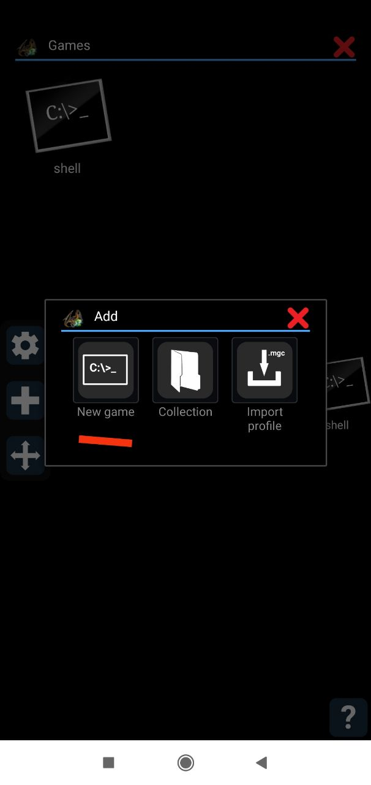

Основы вычислительной техники
Настройка среды
Windows
Для начала установите DOSBox.
Затем скачайте
Pascal + utils
и распакуйте его в C:\Users\{username}\dosbox,
где {username} — это имя вашего пользователя в Windows.
После этого найдите и настройте конфигурационный файл
C:\Users\{username}\AppData\Local\DOSBox\dosbox-{version}.conf,
{version} — это версия DOSBox, которую вы скачали (на
данный момент это 0.74).
В конце конфигурационного файла добавьте:
mount c C:\Users\{username}\dosbox
c:
PATH=C:\;C:\TP\BIN;C:\UTILS;
Android
Скачайте Pascal + utils и распакуйте его в корневую систему на памяти телефона. Затем скачайте DOSBox for Android. На телефоне появится следующая иконка:

Добавьте новую оболочку:

Введите имя для новой оболочки (например,shell):
Отметьте галочкой PC Speaker и Expert, нажмите на
кнопку справа от Expert commands:
Добавьте в конце тектового поля следующие команды:
mount c: /mnt/sdcard/Dosbox c: PATH=C:\;C:\BIN\TP;C:\UTILS;
Сохраните конфигурацию и запустите shell. Вы должны увидеть
следующий экран:
Откройте клавиатуру:
Введите TPX и нажмите Enter. Если всё настроено
правильно, запустится Turbo Pascal 7.0:
Готово! Вы можете приступать к хакерству.
Примеры программ на занятии
Hello-world:
program hello;
begin
writeln('hello world');
readln
end.
Бесконечный hello-world:
program hello;
uses crt;
begin
repeat
writeln('hello');
until keypressed
end.
ChatGPT на Паскале:
program chat;
var
nam: string;
begin
writeln('Hi, what is your name?');
readln(nam);
writeln('Nice to meet you, ', nam);
readln
end.
Простой калькулятор:
program sum;
var
a, b: integer;
c: integer;
begin
writeln('Please, enter the first number');
readln(a);
writeln('Please, enter the second number');
readln(b);
c := a + b;
writeln('Sum is ', c);
readln
end.
Главная страница